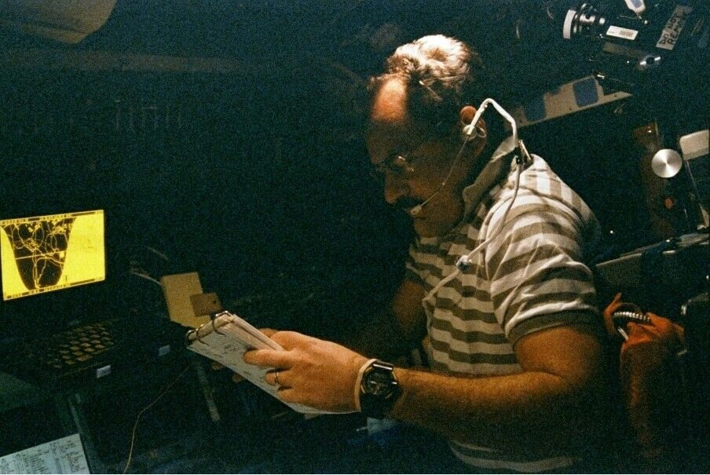

1. Управление
Эмулятор работает с физической клавиатурой: сначала кликните по экрану, чтобы он получил фокус.
- Клавиша CODE в SPOC — это Alt (на Mac — Option). Её нужно удерживать, пока нажимается вторая клавиша.
- Alt+Enter (CODE-RETURN) — подтвердить форму целиком и перейти дальше.
- Enter (RETURN) — перейти к следующему полю формы.
- Alt+Backspace — стереть старое значение поля целиком; обычный Backspace стирает по одному символу.
- Alt+Esc — отменить ввод и вернуться назад (на форму или в главное меню).
- Alt+? — справка по текущему экрану (в программе World Map — список горячих клавиш).
- Стрелки — выбор пункта в меню.
- Кнопки под экраном: «Перезапуск» загружает дискету заново, «Пауза» замораживает эмуляцию, «На весь экран» растягивает экран по размеру монитора (выход — Esc).
- На телефоне и планшете нужна подключённая клавиатура: экранной клавиатуры нет.
2. Что нужно вводить при запуске
Если везде просто нажимать Alt+Enter, вы получите данные миссии STS-31 — старт шаттла «Дискавери» с телескопом «Хаббл» 24 апреля 1990 года в 12:33:51 GMT (космический центр Кеннеди, площадка LC-39B). Время старта и часы эмулятора настроены под эту миссию. Вектор состояния — штатный условный вектор программы, а не реальный вектор STS-31: орбита в нём около 200 морских миль при наклонении 28,5°, а настоящая была выше (около 614 км) при наклонении 28,45°.
После загрузки (около десяти секунд: сначала заставка с шаттлом, затем строки «Searching…») SPOC последовательно показывает три формы. Все значения в них уже подобраны правильно, поэтому достаточно нажимать Alt+Enter на каждом экране. Если хотите разобраться, что именно вводится, вот смысл каждой формы. Правило программы 1980-х: годы только до 2000-го, время запуска < время вектора состояния < текущее время, и между вектором и текущим временем не больше двух суток.
Форма 1. Launch Time Update — время старта миссии (GMT)
Год (1983–1999), день года, часы, минуты, секунды по Гринвичу. От этого момента считается MET (Mission Elapsed Time) — время, прошедшее с запуска. По умолчанию: 1990 год, день 114, 12:33:51 (это 24 апреля, старт STS-31).
Форма 2. GMT Update — текущее время
День года, часы, минуты и год «сейчас»; эти данные заводят внутренние часы SPOC. Часы эмулятора заранее выставлены на 24 апреля 1990 года, около 14:15 GMT (MET около 1 ч 41 мин), потому что программа не принимает 2020-е годы. Если ввести время, не согласованное с вектором, появится предупреждение «Vector more than 2 days old» или «Vector is in the future»: подтвердите его Alt+Enter и поправьте вектор на следующей форме.
Форма 3. State Vector Update — вектор состояния
Положение и скорость корабля на орбите в системе координат M50 (инерциальная, на эпоху 1950 года) плюс момент времени, к которому они относятся:
- Day / Hour / Minute / Second (GMT) — время привязки вектора (по умолчанию запуск + 1 ч 13 мин 35 с, то есть 13:47:26 GMT);
- X, Y, Z Position (KFt) — координаты в тысячах футов;
- X, Y, Z Velocity (KFt/Sec) — скорость в тысячах футов в секунду.
После Alt+Enter внизу появится контрольная проверка: наклонение орбиты и высоты апогея (HA) и перигея (HP). С данными по умолчанию это Inclination = 28.522, HA=200; HP=189. Если значения разумны, подтвердите ещё раз — откроется главное меню. Если нет — Alt+Esc и поправьте числа.
Путь «просто вперёд»
- Launch Time Update — Alt+Enter.
- GMT Update — Alt+Enter.
- State Vector Update — Alt+Enter, затем ещё раз после контрольной проверки.
- Главное меню: выбран Display World Map — Alt+Enter.
- Менеджер станций: выбран Invoke Default Communication Sites — Alt+Enter. Через несколько секунд появится карта мира: граница дня и ночи, трасса орбиты, положение корабля и таймеры связи.
- На карте Alt+? открывает список функций, Alt+Esc возвращает в главное меню.
После каждого подтверждения программа несколько секунд подгружает следующий экран, и клавиши в это время не действуют, поэтому дождитесь, пока он нарисуется.
Если хотите ввести значения вручную
Оригинальное демо из Flight Procedures Handbook. В каждом поле сотрите старое значение (Alt+Backspace), введите новое и нажмите Enter; в последнем поле формы — Alt+Enter.
| Форма | Поля по порядку |
|---|---|
| Launch Time Update | Year 1988 · Day 300 · Hour 0 · Minute 0 · Second 0 |
| GMT Update | Day 300 · Hour 0 · Minute 0 · Year 1988 |
| State Vector — время | Day 300 · Hour 0 · Minute 0 · Second 0 |
| State Vector — позиция | X −4065.5451 · Y 19478.6516 · Z −9134.2843 |
| State Vector — скорость | X −23.4998543 · Y −7.6119311 · Z −5.7686384 |
После формы GMT появится CAUTION: Vector is in the future — это нормально, нажмите Alt+Enter. Контрольная проверка должна показать Inclination = 28.518 и HA=166; HP=159.
3. Роль SPOC в истории

SPOC (Shuttle Portable Onboard Computer) — один из первых портативных компьютеров в космосе. С самого первого полёта (STS-1) независимые расчёты на борту выполнял карманный калькулятор HP-41: он помнил только одну программу за раз и не умел графики. В 1983 году NASA выбрало коммерческий ноутбук GRiD Compass 1101, и на миссии STS-9 он впервые полетел как проверка идеи. Он оказался настолько полезным для «ситуационной осведомлённости» экипажа, что SPOC включали в состав каждой следующей миссии, а начиная с 41-G на борту было уже два комплекта: основной на лётной палубе и резервный в средней палубе.
- Что он делал. Показывал карту мира, текущее положение корабля, границу дня и ночи, текущую и две будущие трассы, время входа в зону связи и выхода из неё (AOS/LOS) для наземных станций и спутников-ретрансляторов TDRS, время восхода и заката на орбите. Позже добавились резервный расчёт возможностей посадки и манёвра схода с орбиты на случай потери связи с Землёй, а также управление центровкой корабля.
- Зачем это нужно. SPOC экономил время Центра управления полётом: не требовалось передавать голосом или телетайпом таблицы времён связи. Пилот STS-9 Брюстер Шоу говорил: «Это действительно большое преимущество — всё время знать, где мы находимся».
- Железо. Эти же ноутбуки дорабатывали для полёта: вместо модема ставили вентилятор, добавляли защиту батареи часов и экран против излучения. GRiD Compass 1101 сменился моделью 1129 (STS-51C), затем 1139 (STS-51G) с более широким экраном 7,5×3,5 дюйма. Электролюминесцентный дисплей этих ноутбуков светился жёлто-янтарным, поэтому и здесь экран окрашен в янтарный.
- Статус. Формально SPOC считался «некритичным, но обязательным» оборудованием: отказ ноутбука не угрожал бы экипажу или миссии, но без него работать было заметно сложнее.
Образ на этой странице — публичная редакция SPOC, которую NASA распространяла через Spacelink для обычных IBM PC. Она запускается в эмуляторе x86, а не на полётном ноутбуке GRiD.